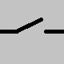
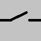

Događaji miša¶
U primjeru „prekidač“ pokazali smo kako u programu možemo reagirati kad korisnik pritisne tipku miša. Iako se korisniku klik čini kao jedna radnja, vidjeli smo da je za računalo to niz događaja koji započinje događajem tipa pg.MOUSEBUTTONDOWN.
U slijedećim primjerima i zadacima upotrijebit ćemo tri vrste događaja upotrebom miša:
Pritiskom bilo koje tipke miša (kao u primjeru s prekidačem), u tom slučaju event.type ima vrijednost pg.MOUSEBUTTONDOWN
Podizanje gumba miša, u tom slučaju event.type ima vrijednost pg.MOUSEBUTTONUP
Pomicanjem miša i u tom slučaju event.type ima vrijednost pg.MOUSEMOTION. U stvari, prilikom pomicanja miša generira se više takvih događaja (svaki od njih opisuje mali pokret miša u vrlo kratkom vremenskom intervalu, tako da svaki takav događaj obično opisuje pokret od samo nekoliko piksela).
Objekti događaja čiji je tip pg.MOUSEBUTTONDOWN također sadrže neke dodatne informacije, kao što su:
event.pos - položaj miša u trenutku registracije događaja (već se koristi u primjeru prekidača)
event.button - označava koja je tipka miša pritisnuta (1 - lijevo, 2 - sredina, 3 - desno, 4 - scroll prema gore, 5 - scroll prema dolje)
Neki dodatni podaci o događajima sadržani u pg.MOUSEMOTION objektima događaja su:
event.pos - položaj miša nakon događaja kretanja miša
event.rel - uređeni par koji opisuje koliko se položaj miša promijenio od prethodnog događaja pokreta miša
event.buttons - popis logičkih vrijednosti s tri elementa koji određuju za svako od tri tipke miša (0 - lijevo, 1 - srednje, 2 - desno) je li bilo pritisnuto tijekom pokreta miša.
Obrada klika - vježbe¶
Možda niste primijetili da se u programu “prekidač” iz prethodne lekcije svjetlo može uključiti i isključiti klikom na bilo koji gumb miša. To je zato što se za svaku tipku miša generira ista vrsta događaja i nismo provjerili koji je gumb pritisnut kada se događaj dogodio.

Zadatak - lijeva tipka kao prekidač:
Kopirajte ovdje program “prekidač”, a zatim ga modificirajte tako da se svjetlo može uključiti i isključiti samo lijevom tipkom miša.
Pomoć: Koristite podatak event.button.
Zadatak - tri prekidača:
Upotrijebite dijelove programa “prekidač” i stvorite program koji simulira rad tri prekidača, kao što je prikazano u primjeru.
{kind=link}
 

{kind=link}


Ostali događaji miša¶
Kao što je spomenuto na početku ove lekcije, program također može reagirati na događaje otpuštanja gumba miša i pokreta miša. Da biste to učinili, potrebno je usporediti vrijednost event.type s konstantama pg.MOUSEBUTTONUP i pg.MOUSEMOTION. Slijede zadaci u kojima možete to i isprobati.
Zadatak - crtanje linija:
Dovršite program tako da se pomoću njega mogu crtati ravne linije, kao u primjeru.
Zadatak - crtanje linija sa brisanjem:
Kopirajte program dolje za crtanje linija, a zatim dodajte mogućnost za brisanje svih linija desnim klikom.
Pomoć: Za razlikovanje između lijeve i desne tipke miša u programu, ponovo treba koristiti podatak event.button. Kod u funkciji handle_event treba izgledati otprilike ovako:
Zadatak - povlačenje:
Sljedeći program prikazuje kako dopustiti korisniku programa da povlači predmete.
Isprobajte program (povucite jabuke u košaru) i pokušajte ga razumjeti, a zatim odgovorite na pitanja u nastavku.


- redni broj jabuke koju crtamo
- Pokušaj ponovo
- redni broj jabuke koju povlačimo
- Točno
- ukupan broj jabuka
- Pokušaj ponovo
- broj preostalih jabuka na stablu
- Pokušaj ponovo
Q-77: Što predstavlja varijabla i_apple u programu?
-
Q-78: Uparite provjere u programu sa njihovim značenjem.
Pokušaj ponovo!
- if mouse_is_on_image(event.pos, basket_pos, basket_image):
- whether the apple should be deleted
- if mouse_is_on_image(event.pos, apple_positions[i]
- whether the user "took" the apple
- if len(apple_positions) == 0:
- whether the game is over
- if i_apple >= 0:
- whether a drag is ongoing
- čitamo ako je tipka miša tijekom pokreta pritisnuta
- Ovo nije prikladan način, jer se gumb može pritisnuti u prazno (korisnik nije "uzeo" objekt koji se povlači)
- Povlačenje je zasebna vrsta događaja
- Ne, ne postoji takva vrsta događaja
- kad miš obično kreće, redni broj "jabuke koju vučemo" je -1
- Točno
Q-79: Kako u programu razlikujemo povlačenje i obično kretanje miša?